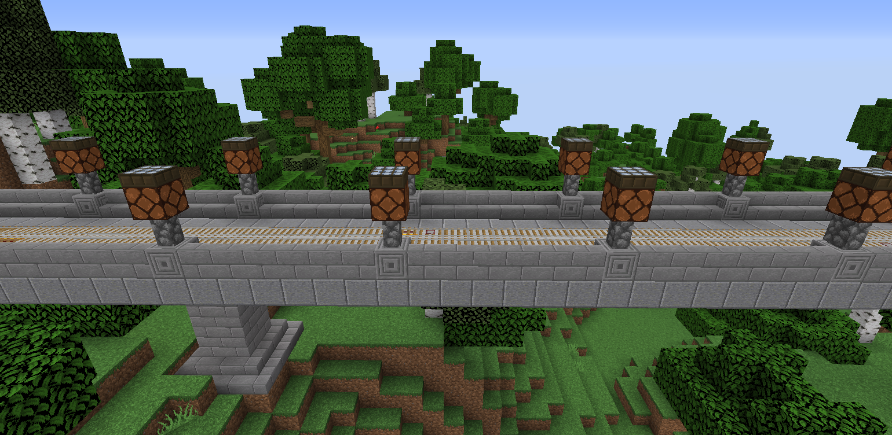

CrispyMiners Rules
THIS PAGE IS OUTDATED. IT WILL BE UPDATED SHORTLY.
All rules MUST be followed and breaking any rule could be reason for a banning. Assume you only get one chance.
Rule 1: Never pull a dicky
This rule is the catch-all for anyone being an asshole or doing something that is generally frowned upon. There's a variety of things that can be considered pulling a dicky, such as bullying another player, directly offending another player, or essentially anything else that would be a dicky move. For more information on the origin of pulling a dicky, see the "Dicky" page under the "Lore" category of the guides.
Rule 2: Respect all players and staff
This rule goes along with rule 1 - just respect each other, don't be a douche. Plain and simple.
Rule 3: No hacking
We consider hacking to be anything that includes using hacked clients, using mods (other than Optifine and minimaps), using xrays, using autoclickers, or simply any other kind of cheating. Just don't do it.
Rule 4: No spamming or advertising
Spamming includes repeating the same message more than once, getting in and out of bed rapidly, going AFK / un-AFK rapidly, rapidly trying to tpa to a player, or just sending gibberish messages. Advertising includes advertising any other server, any youtube channel, or advertising anything else that is not stricly CrispyMiners related.
Rule 5: No griefing
Let's be honest, griefed builds look like shit. Don't grief, let's keep our server looking beautiful. Raiding unclaimed land IS allowed as well as taking over an unclaimed base. Try not to piss off active players as well if they simply forgot to claim something - you can use /co i to see when something was built.
Rule 6: Do not grief the server rail lines
This one should be very simple to follow. Don't break any blocks that are part of the rail lines. You are allowed to build your own stations that are connected to the lines, but don't destroy any piece of the lines. Below this text is a picture of what they look like. The reason the rail lines are not claimed is so that player can still build or mine beneathe the rail lines without needing special permissions. For more information on the rail lines, see the "Rail System" page under the "General" category of the guides.

Rule 7: No AFK fishing machines
To put it simply, AFK fishing machines are far too OP and take away from actually playing the game. We don't like it, so don't do it. If you are caught with a machine or having built a machine, you WILL be BANNED.
Rule 8: No PvP without consent
This is not a PvP server. PvP is enabled so that people CAN PvP if they choose to, but only if both players consent to it. If someone comes to a staff member saying they were randomly attacked, the attacker is going to be in trouble.
Rule 9: Do not abuse glitches / exploits
Most things that are not meant to be part of the game are considered an exploit. ANY duping glitch falls under this rule. If you have a question about a specific mechanic and whether or not it's considered an exploit, ask. If you do find a glitch or bug, report it to staff immediately.